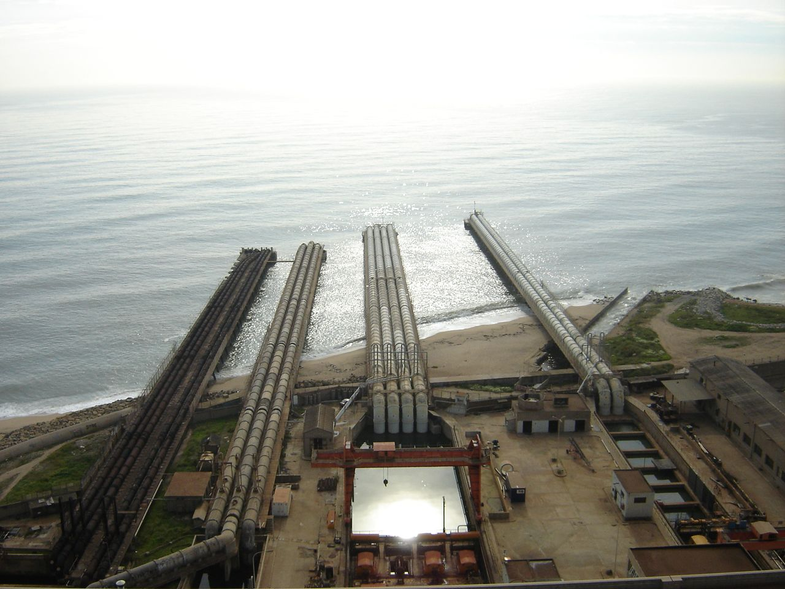

Centrals tèrmiques.#
Pàgina en desenvolupament
Encara estem treballant en aquest document.
Esperem oferir-vos properament el seu contingut.
Disculpeu les molèsties.
A les centrals tèrmiques es crema un combustible per produir vapor a pressió, que mitjançant una turbina acoblada a un alternador generarà energia elèctrica. El seu diagrama d’energies és, per tant:
Típicament el combustible cremat és un combustible fòssil (carbó, gas…), una font de energia exhaurible que estem esgotant i que és incompatible amb un desenvolupament sostenible. A més a més, la utilització d’aquests combustibles fòssils implica contaminació i altres impactes ambientals importants que estudiarem.
Central tèrmica convencional#

01 Torre de refrigeració
02 Bomba hidràulica
03 Línia de transmissió
04 Transformador
05 Generador elèctric
06 Turbina vapor baixa pressió
07 Bomba de condensació
08 Condensador de superfície
09 Turbina de mitja pressió
10 Vàlvula de control de gasos
11 Turbina de vapor alta pressió
12 Desgassificador
13 Escalfador
14 Cinta transportadora de carbó
15 Tremuja de carbó
16 Pulveritzador de carbó
17 Tambor de carbó
18 Tremuja de cendres
19 Superescalfador
20 Ventilador de flux forçat
21 Reescalfador
22 Presa d’aire de combustió
23 Economitzador
24 Preescalfador d’aire
25 Precipitador electroestàtic
26 Ventilador de fluix induït
27 Xemeneia d’emissions.
28 bomba d’alimentació d’aigua
Sistemes de refrigeració#
El rendiment de la central millora si en lloc d’alliberar el vapor una vegada que ha exercit força sobre les turbines el condensem obtenint aigua molt calenta que tornem a introduir al cicle de generació. Per a aquest motiu es fa servir un condensador que es refreda amb un circuit exterior d’aigua, aigua freda que es pot obtenir del mar o d’un riu. En aquest segon cas l’aigua escalfada pel condensador ha de ser a la seva vegada refredada per l’atmosfera en un torre de refrigeració abans de tornar al riu, per minimitzar el seu impacte ecològic.
Refrigeració amb aigua de mar: Canonades refrigeració central tèrmica Sant Adrià de Besòs. |
Refrigeració amb torre de refrigeració: Torre de refrigeració central tèrmica Cercs |
|---|---|
 |
Això també és aplicable a les centrals nuclears, que veurem més endavant, ja que les centrals nuclears no deixen de ser centrals tèrmiques on la calor es produeix per una reacció nuclear, en lloc de la reacció química a les centrals tèrmiques convencionals.
Turbines d’alta, mitja i baixa pressió#
Les turbines de vapor de les centrals tèrmiques i nuclears són molt diferents de les que hem vist a les centrals hidràuliques. La força del vapor produït a la caldera és tan gran que l’única solució possible per extraure tota aquesta força sense trencar la turbina es treballar inicialment amb àleps molt petits, i conforme el vapor perd pressió, incrementar la mida de l’àlep per mantenir el producte F = p · S constant. Per optimitzar aquest sistema, es treballa típicament amb tres conjunts de turbines connectades, d’alta, mitja i baixa pressió, amb radis cada vegada més grans.
Degut a les altes temperatures i esforços a que estan sotmeses les turbines de vapor aquestes es fabriquen amb superal·liatges de niquel amb alumini i titani, recoberts amb una capa de ceràmica de diòxid de zirconi.
Rendiment#
El rendiment típic d’una central tèrmica es baix, al voltant d’un 33 %. Això vol dir que per cada kWh d’electricitat que arriba a casa nostra s’allibera el doble d’energia en forma de calor al nostre planeta, contribuint al seu escalfament global.
Impacte ambiental#
A més a més de la seva contribució a l’escalfament global pel seu rendiment, les central tèrmiques produeixen CO2 en la combustió, incrementant l’efecte hivernacle al nostre planeta.
Per altra banda, la utilització de carbó com a combustible, que porta compostos de sofre i d’altres impureses, afegeix la producció d’òxids de nitrogen i sofre, que provoquen la pluja àcida i boires fotoquímiques, amb un efecte devastador sobre la zona.
A més a més, les torres de refrigeració incrementen la humitat de l’aire, moltes vegades produint un xim-xim constant, que, per exemple a la central de Cercs, barrejat amb el fum de la xemeneia, feia malbé els cotxes dels treballadors. En el seu defecte, a les centrals refrigerades amb aigua de mar, la temperatura al voltant de la seva desembocadura puja uns graus, alterant l’ecosistema marí.
Centrals de cicle combinat#
Si el combustible és gas, en lloc de cremar-lo a la caldera es fa a una turbina de gas connectada a un segon alternador, i utilitzant la calor de la turbina per generar vapor en el típic cicle de la central tèrmica, s’aconsegueix augmentar el rendiment fins al 45 %.
El gas, a més a més, fa una combustió neta, on els productes generats son CO2 i vapor d’aigua. Per tant, si bé no genera pluja àcida ni boires fotoquímiques, contribueix a l’escalfament del planeta agreujat per l’efecte hivernacle del CO2, a més d’utilitzar una font d’energia exhaurible.
Centrals de cogeneració#
Si part de la calor generada a la central s’aprofita, per exemple, per escalfar aigua sanitària, aigua d’una piscina… parlem de cogeneració, on el rendiment pot arribar al 85 %.
Si a més a més el combustible cremat no és un combustible fòssil, si no que es tracta de biomassa o biocombustible (fonts renovables d’energia), hem de considerar que el CO2 alliberat es tornarà a capturar en la producció de nou combustible als conreus.
Amb aquest rendiment i en absència d’emissions netes de CO2 (el CO2 alliberat és el mateix que va capturar la planta que vam conrear) aquesta és, potser, una de les fonts d’energia més sostenible dintre de les centrals tèrmiques que podem trobar.
Inèrcia de les centrals tèrmiques#
Típicament una central tèrmica triga unes 2h en aconseguir un funcionament òptim des de que iniciem la producció, ja que s’han d’escalfar molts elements. Per això cal programar la seva engegada unes hores abans de l’increment de la demanda, previsió feta a base d’estadístiques de consum.
Exemple: PAU 2007 S3 4B#

Primer farem un diagrama del flux d’energia, ubicant les dades i les incògnites:

Introduim les dades (S.I.):
Eelec = 65*10**6*3600
mr = 75*10**3
p = 11.8*10**6
ma = 3*10**6
deltat = 40
ce = 4.18*10**3
a) Calculem la calor Qc generada cada dia:
Qc = mr*p
Qc
885000000000.0
Ara podem calcular el rendiment mitja de la planta \(\eta_{elèc}\) com el quocient de l’energia generada i l’energia consumida cada dia:
etaelec = Eelec/Qc
etaelec
0.26440677966101694
Arrodonint, \(\eta_{elèc}\) = 0,2644
b) Calculem la calor Q no aprofitada per la planta
\(Q = (1 - \eta_{elèc}) \cdot Q_{c}\)
Q = (1-etaelec)*Qc
Q
651000000000.0
La calor util Qu que escalfa l’aigua el podem calcular com
\(Q_{u} = m_{a} \cdot c_{e} \cdot \Delta t\)
Qu = ma*ce*deltat
Qu
501600000000.0
El rendiment tèrmic mitja \(\eta_{tèrmic}\) serà el quocient entre la calor útil (Qu) i la que no s’ha aprofitat a la transformació elèctrica (Q)
etatermic = Qu/Q
etatermic
0.7705069124423963
Arrodonint, \(\eta_{tèrmic} = 0,7705\)
c) Com un dia té 86400 s :
Pelec = Eelec/86400
Pelec
2708333.3333333335
Arrodonint \(P_{elèc} = 2,708 \hspace{1mm} MW\)
En un dia el volum d’aigua escalfada sera la massa d’aigua dividida per la densitat:
Va = ma / 1000
Va
3000.0
Per tant, el cabal -que és aquest volum dividit pels 86400 s d’un dia- serà, en m³/s:
q = Va/86400
q
0.034722222222222224
Arrodonint, \(q = 34,72 \hspace{1mm} l/s\)
Rendiment total de la planta de cogeneració
Si ens preguntem quin és el rendiment total, primer podríem calcular l’energia total aprofitada, tant en producció elèctrica com en l’escalfament de l’aigua
\(E_{util} = E_{elèc} + Q_{u} = Q{c} \cdot \eta_{elèc} + Q{c} \cdot (1 - \eta_{elèc}) \cdot \eta_{tèrmic}\)
dividint per la calor consumida obtenim el rendiment total:
\(\eta_{} = \eta_{elèc} + (1 - \eta_{elèc}) \cdot \eta_{tèrmic}\)
en el nostre cas
eta = etaelec+(1-etaelec)*etatermic
eta
0.8311864406779661
Arrodonint, tenim un rendiment total \(\eta = 83,12 \%\)